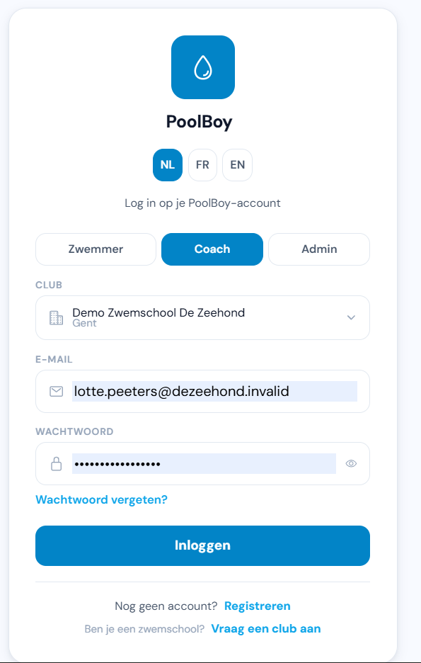
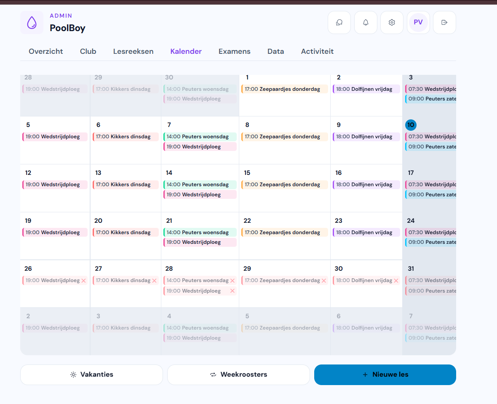
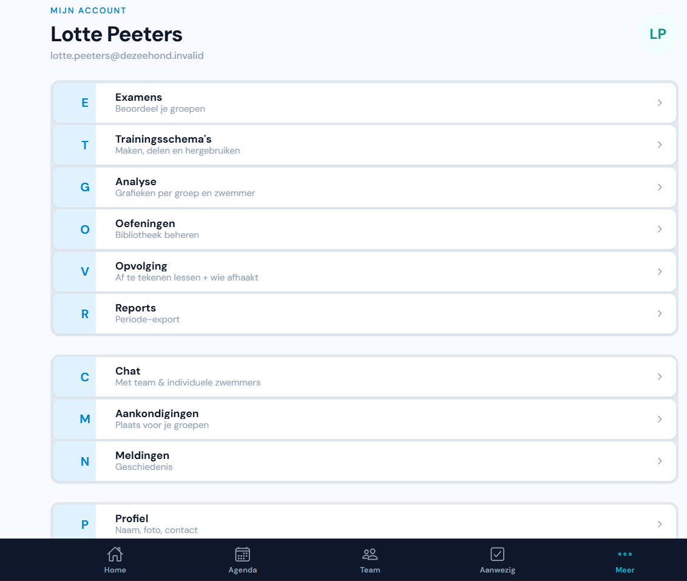
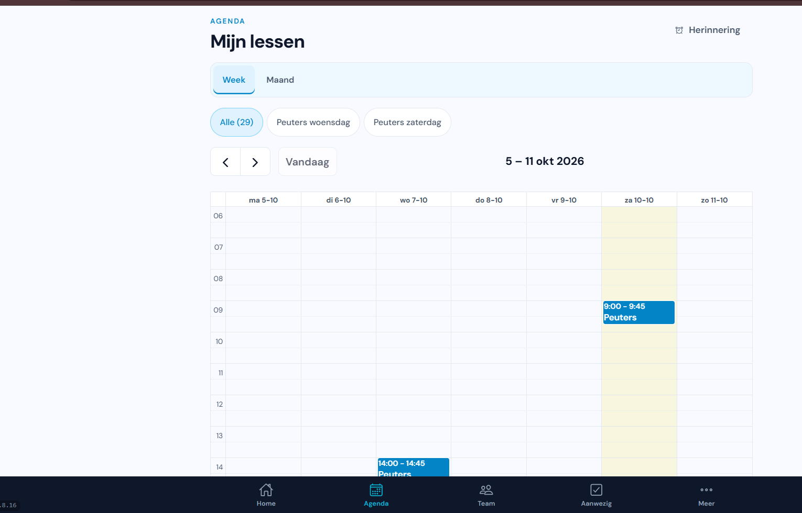
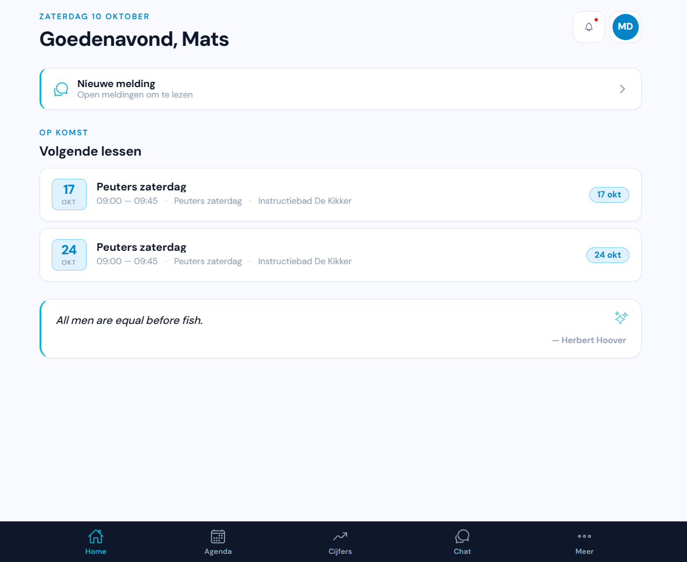
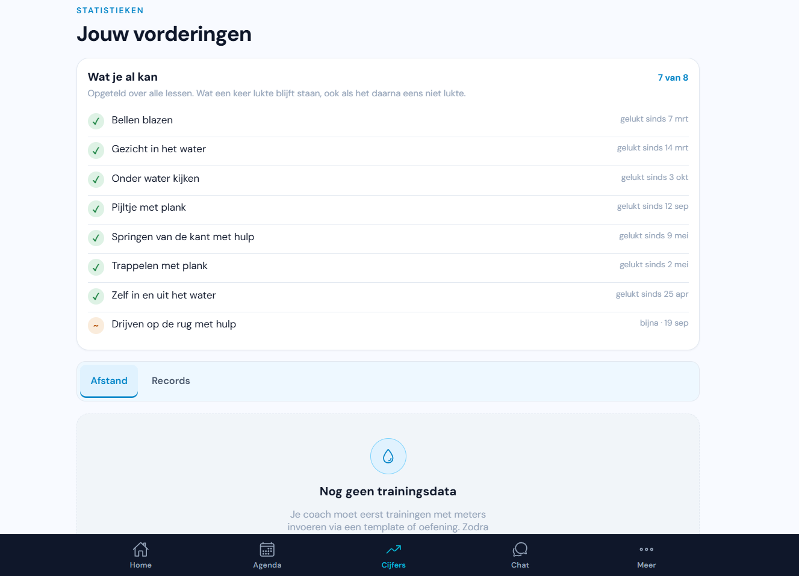
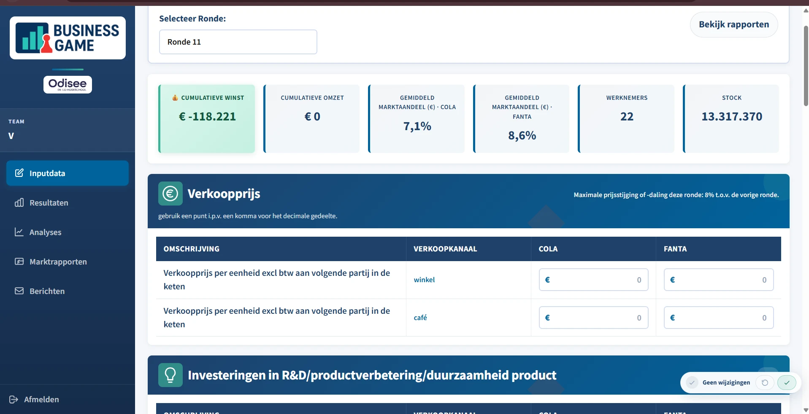
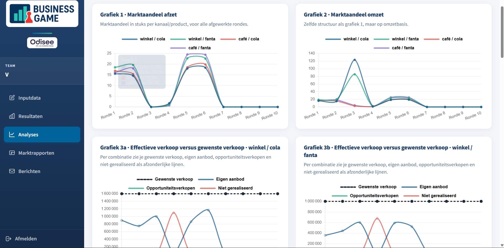
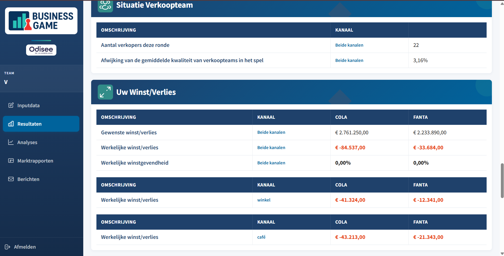
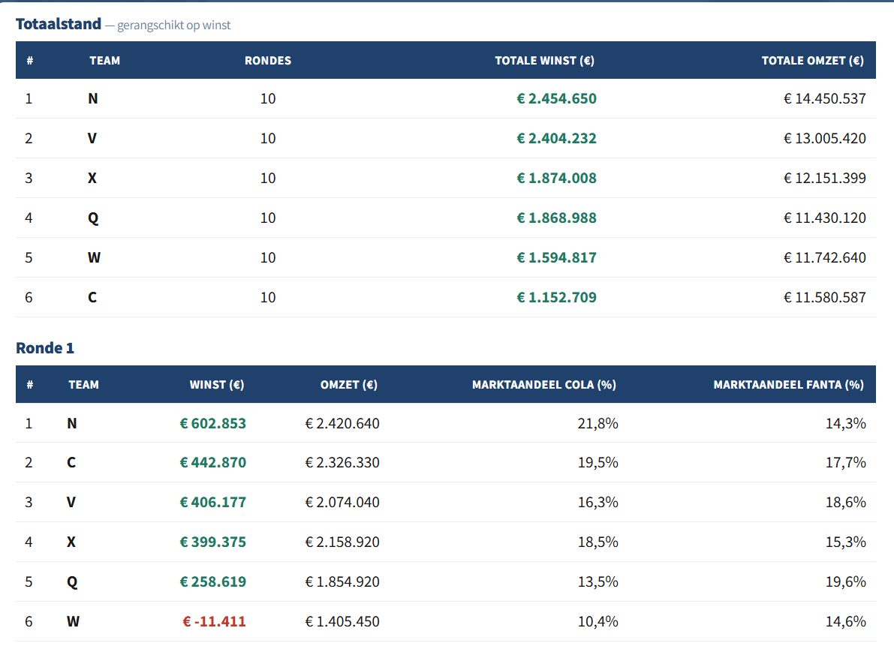

Student Toegepaste Informatica, 3e bachelor · Full-stack en mobiele ontwikkeling
Ik bouw web- en mobiele apps van databank tot interface. Hieronder staan de twee projecten waar ik het meest aan gewerkt heb: een app die bij een zwemschool in test loopt, en een simulatiespel dat Odisee in de les gebruikt. Bij elk staan screenshots uit de draaiende toepassing en een korte uitleg over waar het werk zat.
Mobiele app voor zwemscholen · eigen project · sinds eind 2025
Zwemscholen houden hun lessen, aanwezigheden en de voortgang van hun leerlingen vaak nog bij op papier of in losse Excel-bestanden. Poolboy brengt dat samen in één app, met een eigen omgeving per zwemschool en drie verschillende interfaces: een beheerder plant lesreeksen en weekroosters, een coach tekent lessen af en beoordeelt examens, en een zwemmer ziet zijn volgende les en wat hij al kan. De app loopt in test bij zwemschool Aquademy en met een tweede zwemschool lopen gesprekken.
Ik heb het volledige project alleen gebouwd, van de databank tot de interface.
Wat erin zit: lesreeksen, weekroosters en vakantieperiodes, aanwezigheden aftekenen, examens en beoordelingen, trainingsschema’s met een oefeningenbibliotheek, voortgang per vaardigheid en per zwemmer, grafieken per groep, chat in groep en één-op-één, aankondigingen en pushmeldingen, betaalverzoeken en facturen, en exports per periode.
Een keuze die ik maakte. Ik heb voor Ionic met Capacitor gekozen in plaats van twee native apps. Als alleenbouwer kon ik zo iOS en Android uit dezelfde codebase bedienen: een wijziging aan de aanwezigheidsweergave moest ik maar één keer schrijven. De prijs daarvoor is dat ik verder van de native API’s sta, en dat was voor deze app een prijs die ik kon betalen.






Probeer de app zelf
Op mesutbora.be staat Poolboy klaar met een demo-zwemschool. Alle leerlingen, lessen en aanwezigheden daarin zijn verzonnen: er staan geen gegevens van echte zwemscholen of echte kinderen in.
Kies bovenaan de rol, daarna de club, en log in met het adres dat erbij hoort. Er staan drie accounts klaar met elk andere rechten: probeer ze alle drie en je ziet hoe de app per rol iets anders toont.
Demo Zwemschool De Zeehond kies deze in de lijstpieter.vermeulen@dezeehond.invalidthomas.maes@dezeehond.invalidtine.vanacker@dezeehond.invalidZeehond-ade01a17! voor alle drieBedrijfssimulatie voor Odisee · full-stack developer · sinds april 2026
BizGame is een simulatiespel waarin zes teams een drankenbedrijf runnen tegen elkaar. Elke ronde beslist een team over verkoopprijs, productie, voorraad, marketing, personeel en investeringen in R&D, voor twee producten en twee verkoopkanalen. Daarna rekent het spel de ronde door en zien de teams wat hun keuzes opgebracht hebben.
We bouwden het in een team van vier voor het vak Integration Project. Na het vak vroegen de docenten van Bedrijf en Organisatie en Odisee of ik het alleen verder kon ontwikkelen, en dat doe ik sindsdien. Ongeveer 100 studenten en 8 docenten gebruiken het nu.
Waar het werk zit. De interface is een gewone webtoepassing. Het moeilijke deel is de berekening eronder. Een team kan niet apart doorgerekend worden, want marktaandeel is relatief: wat jouw bedrijf deze ronde verdient, hangt af van wat de vijf andere teams beslist hebben. Elke ronde wordt de hele markt in één keer opgelost. De vraag wordt verdeeld over zes aanbieders, afgetoetst aan wat elk team werkelijk op voorraad heeft, en daarna uit elkaar gehaald in gewenste verkoop, werkelijke verkoop, opportuniteitsverkopen en niet-gerealiseerde vraag. Dat alles per product en per kanaal, en bovenop regels zoals een maximale prijswijziging van 8 % per ronde en de kwaliteit van je verkoopteam tegenover het spelgemiddelde. Eén fout in die keten en de stand van zes teams klopt niet meer.
Een keuze die ik maakte. De docenten moesten elk semester de spelparameters kunnen aanpassen, maar ze zijn geen programmeurs. In plaats van een beheersinterface te bouwen, heb ik met Python een Excel-bestand aan de applicatie gekoppeld: één knop leest hun Excel in, één knop schrijft de resultaten terug. Ze werken dus in het programma dat ze al kenden, en ik hoef niet bij elke aanpassing tussen te komen.




Inloggen is voorbehouden aan studenten en docenten van Odisee, dus de site is wel bereikbaar maar niet te gebruiken. De screenshots hierboven komen uit de draaiende toepassing; klik erop om ze op volle grootte te bekijken.